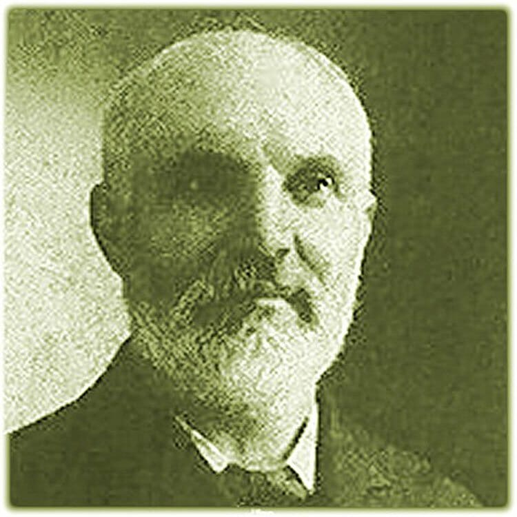
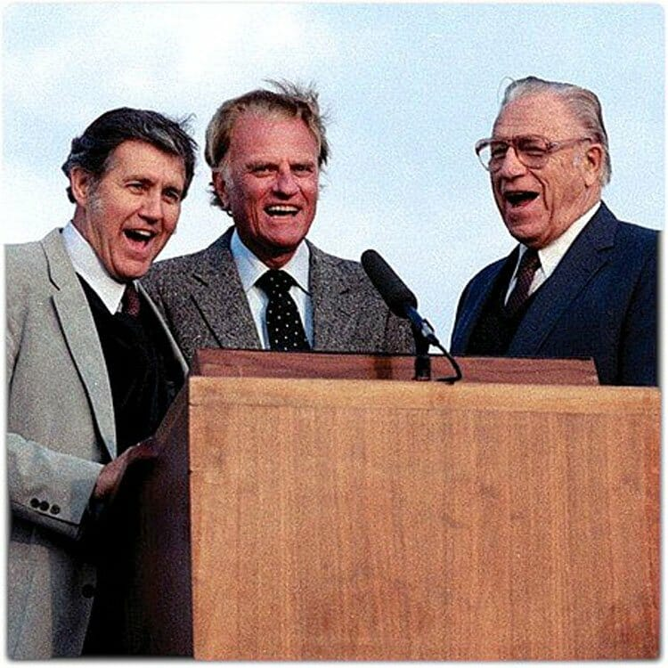

1433 GP071 我心得满足, Satisfied
|
|
|
|
1. All my life I had a longing
For a drink from some clear spring,
That I hoped would quench the burning
Of the thirst I felt within.
Refrain:
Hallelujah! I have found Him
Whom my soul so long has craved!
Jesus satisfies my longings,
Through His blood I now am saved.
2. Feeding on the husks around me,
Till my strength was almost gone,
Longed my soul for something better,
Only still to hunger on.
3. Poor I was, and sought for riches,
Something that would satisfy,
But the dust I gathered round me
Only mocked my soul’s sad cry.
4. Well of water, ever springing,
Bread of life so rich and free,
Untold wealth that never faileth,
My Redeemer is to me.
Source: 50
Favorites: and July 2013 index of supplement to Evening Light Songs #36 |
1.我的生命渴望已久
能飲於清涼水泉
除去我心如火憂情
解我乾渴的心靈
哈利路亞!
我已尋見我心所渴慕的主!
靠祂寶血我得拯救
使我心靈得滿足
2. 我心欲求豐盛生命
能使我心得充盈
但我所得都如煙雲
惟使我心更虛空
哈利路亞!
我已尋見我心所渴慕的主!
靠祂寶血我得拯救
使我心靈得滿足
3 .活水泉源永流不息
生命靈糧靠主賜
豐富恩典永遠基業
都在救主基督裡
哈利路亞!
我已尋見我心所渴慕的主!
靠祂寶血我得拯救
使我心靈得滿足 |

https://www.zanmeishi.com/tab/25388.html?songbook=1&index=71
 |
| |
|
http://www.hymncompanions.org/Jan/07/stream.php
我心得滿足
Satisfied
我的生命渴望已久，能飲於清涼水泉，
除去我心如火憂情，解我乾渴的心靈。
我心欲求豐盛生命，能使我心得充盈，
但我所得都如煙雲，惟使我心更虛空。
活水泉源永流不息，生命靈糧靠主賜，
豐富恩典永遠基業，都在救主基督�堙C
（副歌）
哈利路亞！我已尋見我心所渴慕的主！
靠祂寶血我得拯救，使我心靈得滿足。
 (請點耳機收聽)
(請點耳機收聽)
近二十年來，我的新年心願都沒有改變，「求神給我一個健康的身體，一顆知足的心，和喜樂的靈。」這個心願使我終年常樂，對我而言，它比世上一切的榮華富貴更珍貴。
魏珂蕾（Clara Tear Williams, 1858-1937）出生在美國俄亥俄州，一個世代是衛理公會的會友的家庭。
她在十三歲時就信主，但一直到十七歲才真正地決志奉獻。一度她掙扎，是否能放棄她多年的夢想：做一個受人崇敬的教師，過舒適的生活，與學者為伍，或祇為主而活，與這邪惡的社會隔絕？
最後她終於把世界和自己釘死，滿懷信心地走神的道路。
於是她的生命有了大改變，過去她羞于啟齒向人傳揚救主，不敢在人前禱告，現在她可毫無畏懼地見證神。 1883年起，她開始了二十年騎馬奔走各地傳道的生涯。
「我心得滿足」是魏珂蕾應哈得遜之邀而作的。1875年，魏珂蕾在俄亥俄州參加一個聚會並從中協助事工。
有一晚大會後，大會的領唱者哈得遜教授告訴魏珂蕾，他正要出版一本詩歌集，希望她能寫一首詩。 當晚她就寫了這首「我心得滿足」，而次晨哈得遜就譜成了曲調。
著名的聖詩歌唱家謝伯偉（George Beverly Shea）在他Songs That Lift
Heart一書中提到在他八歲時，有一天下午，他隨他的牧師父親在紐約過街時，看到一位高大年邁的老婦人緩緩地自對街走來。
當他們經過她身邊時，謝牧師摘帽向她問安。她駐足四望，報以微笑致意。過後謝牧師帶著敬意地告訴小伯偉，這位女士是「我心得滿足」的作者魏珂蕾。
回家後，伯偉告訴他母親下午的巧遇，母親就走到琴旁彈這首詩歌並教伯偉唱。 魏珂蕾端莊雍容，帶有基督慈祥的微笑一直深印他心，若干年後，伯偉開始獨唱時就唱這一首詩歌。
譜曲的哈得遜（Ralph E. Hudson, 1843-1901）出生於俄亥俄州，美國內戰時，服役於賓州志願兵團，繼在醫院任護士。
戰後退役，他在大學教了五年音樂，被聖公會按牧後，熱心佈道。 他是著名的作曲家、歌唱家及出版家。「頌讚主聖名」（Blessed
Be the Name）和「在十架」（At the Cross）(參閱五月廿日) 都是他的作品。

頌讚主聖名
Blessed
Be the Name
頌讚歸與耶穌聖名，至高至聖至尊，
天上地下歌頌主名，歌聲晝夜不停！
耶穌聖名滿有權能，使魔鬼都逃遁，
能使罪人出死入生，得到天堂福份。
主名稱為奇妙策士，全能和平之君，
萬膝跪拜萬口承認，榮耀永歸主名。
主名何等佳美馨香，普遍宇宙穹蒼，
主名超乎萬名之上，配受一切頌揚。
（副歌）
頌讚主聖名！頌讚主聖名！頌讚榮耀歸主聖名！
頌讚主聖名！頌讚主聖名！頌讚榮耀歸主聖名！
(請點耳機收聽)
中英文聖詩集參考
英文歌名 Satisfied
教會聖詩 71
歡欣讚美 518
聖詩 229
英文歌名 Blessed
Be the Name
教會 259
頌主聖詩 211
http://www.xueshengshi.com/?p=4106
简介（一） （来源：《岁首到年终》）
我心得满足 Satisfied
Clara Tear Williams, 1858-1937
祢必将生命的道路指示我。在祢面前有满足的喜乐。在祢右手中有永远的福乐。(诗16:11)
基督徒的价值观与现今世界价值观是背道而驰的信念。
我们今日所处的社会盛行自由主义、物欲主义、机会主义，大家努力争取属于自己的产业便成为理所当然的事情。每一个在生活中劳碌打拼的人，终日营营役役，究竟为了甚么？诚如传道书所说，这一切都是追逐虚空、为风劳碌。
唯有在基督里才有真正的满足，「神是我的产业」是基督徒的价值观。只有神才是真正、终极、永�琲�产业。
关于本诗的背景，作者 Clara Tear Williams 回忆：「约在 1875 年，我正在 Ohio 州的 Troy
协助会议事务。一天晚上散会后，音乐指挥 Ralph E..Hudson
教授问我可否为他即将出版的诗本作首诗。临睡前，我写了“我心得满足”。次日早晨，他就配上曲」这就是本诗的来源。
编曲者 Ralph E. Hudson 1843 年 7 月 9 日生于 Ohio 的 Napoleon，美国内战退役后，在 Mount Vernon
大学教音乐。后来献身作圣公会牧师，热心布道，是一著名的歌唱家、作曲家并拥有自己的出版社。其著名的作品如：「颂赞主圣名」「在十架」是今日教会风行的圣诗。
1 我的生命渴望已久，能饮于清凉水泉，
除去我心如火忧伤，解我干渴的心灵。
2 我心欲求丰盛生命，能使我心得充盈，
但我所得都如烟云，惟使我心更虚空。
3 活水泉源永流不息，生命灵粮靠主赐，
丰富恩典永远基业，都在救主基督里。
（副歌）
哈利路亚﹗我已寻见我心所渴慕的主﹗
靠祂宝血我得拯救；使我心灵得满足。
＊神不能使他满足的人，没有事情能使他满足。 ── 亚丰索
https://hymnary.org/person/Williams_ClaraTear
Clara Tear Williams
Short Name: Clara Tear Williams
Full Name: Williams, Clara Tear, 1858-1937
Birth Year: 1858
Death Year: 1937
Williams, Mrs. Clara Tear. (Painesville, Ohio, September 22, 1858--July 1, 1937,
Houghton, New York). As a young woman she was a school teacher. She suffered an
attack of tuberculosis but fully recovered from it and for a number of years
engaged in evangelistic work in several North Central states. In 1895 she
married the Reverend W.H. Williams, a Wesleyan Methodist minister, and until his
death thirty years later labored with him in serving churches in New York, Ohio,
and Pennsylvania. She was a member of the Commission of her church which
compiled Sacred Hymns and Tunes, 1897.
--Robert G. McCutchan, DNAH Archives. Photocopied photos (uncited) of Clara Tear
Williams and pages from a manuscript family history by Frank W. Tear are also
available in the DNAH archives.

==========================
Rev. Mrs. Clara Tear Williams was a pastor and evangelist. From what records are
available, it appears that she affiliated with the Wesleyan Methodist Church in
the 1880s. The information suggests that she was a Licensed Minister, but never
ordained. She served on the Committee to compile the WMC hymn book, "Sacred
Hymns and Tunes" in 1897. She married William H. Williams in 1895 whom she had
met while conducting meetings in Middlefield, Ohio. He had been widowed in 1881.
He joined her in the ministry, the first mention of him in the Pastoral
Relations Report being in 1901. He died May 17, 1934 in Houghton, New York.
According to Mrs. Williams' obituary, she was connected with the Allegheny and
Lockport Conferences of the Wesleyan Methodist Church. No reference was found to
her in the Minutes of the Lockport Conference, but she was mentioned in the
Minutes of the New York Conference. Though there is no body of minutes available
for the early years of the Allegheny Conference, Mrs. Williams can be found in
the Statistical and Pastoral Relations reports sent to The Wesleyan Methodist.
The following information is taken from those sources.
Allegheny Conference/New York Conference, WMC:
1886-1887: Clara Tear is assigned by the Allegheny Conference to serve as
Evangelist at Large, and to Concord, Ohio.
1888: No mention found at either Conference.
1889: Clara Tear is on the Licentiate List for the Allegheny Conference, no
assignment; she is present at this year's session of the New York Conference and
introduced as being from the Allegheny Conference.
1890: Listed as an Evangelist at Large for the Allegheny Conference; present at
the New York Conference and listed as a lay delegate and General Missionary.
1891: On the Licentiate List for the Allegheny Conference but no assignment
given; present at the New York Conference, her name was called, character
passed, and License renewed; she reported she had been in evangelistic work,
then had taken charge of the work at Lake Hill for the remainder of the year;
she is listed as a General Evangelist and was elected as a lay delegate to the
1891 General Conference.
https://wordwisehymns.com/2012/08/06/satisfied/
Words: Clara Tear Williams (b. Sept. 22, 1858; d. July 1, 1937)
Music: Satisfied, by Ralph Erskine Hudson (b. July 12, 1843; d. June 14, 1901)
Links:
Wordwise Hymns
The Cyber Hymnal
Note: About twenty years before her marriage in 1895, young Clara Tear was asked
by Ralph Hudson to provide a song for a new book he was publishing. She wrote
the text of Satisfied that very evening, and he added the tune the next day.
The original version of the refrain said, “Hallelujah! I have found it– / What
my soul so long has craved.” The changes made by the time the song was published
in the Wesleyan Methodist Hymnal in 1910 make the application to Christ more
direct and specific (though “it” and “what” ties in nicely with the theme of
satisfaction).
The Cyber Hymnal uses an updated version of the opening lines: “All my life I
had a longing / For a drink from some clear spring,” which I suppose is fine.
Though the word “pant” is biblical (Ps. 42:1), and “draught” (the
British-Canadian spelling of draft) is a common enough term. It refers to a
portion of liquid to be drunk.
When he began singing in his late teens, this song was one of the first George
Bevely Shea sang as a solo. He sang it in his father’s church in Ottawa. He knew
Mrs. Williams personally, and says of her:
“She had a regal and dignified bearing and yet she had the kindness and
gentleness of Christ in her face. I enjoyed the soft, musical tones of her
voice. Through her sweetness and graciousness to everyone, she became another
wonderful proof to me of the reality of the Christian walk. Hers was a beautiful
life exhibited not only to the whole community, but expressed also in the pages
of hymnody. (Crusade Hymn Stories, p. 75)
“‘My people shall be satisfied [abundantly filled and fulfilled] with My
goodness,’ says the LORD” (Jer. 31:14). Often in the Old Testament this has to
do with physical satisfaction because of having plenty of food to eat in Israel.
But we can also make a spiritual application of the words. In the Lord Jesus
Christ, we find a soul satisfaction that can be found nowhere else.
CH-1) All my life long I had panted
For a draught from some clear spring,
That I hoped would quench the burning
Of the thirst I felt within.
Hallelujah! I have found Him
Whom my soul so long has craved!
Jesus satisfies my longings,
Through His blood I now am saved.
CH-3) Poor I was, and sought for riches,
Something that would satisfy,
But the dust I gathered round me
Only mocked my soul’s sad cry.
Christ declared that He came to give us abundant life (Jn. 10:10). We know that
heaven will be like that (cf. Eph. 2:7), but there is an abundance for this life
as well (cf. Phil. 4:19). He is the bread that feeds us spiritually, and from
Him flows the spiritual refreshment we need.
“Jesus said to them, ‘I am the bread of life. He who comes to Me shall never
hunger, and he who believes in Me shall never thirst’” (Jn. 6:35). “Whoever
drinks of the water that I shall give him will never thirst. But the water that
I shall give him will become in him a fountain of water springing up into
everlasting life” (Jn. 4:14).
CH-4) Well of water, ever springing,
Bread of life so rich and free,
Untold wealth that never faileth,
My Redeemer is to me.
Questions:
1) What are the characteristics of a Christian who is enjoying the abundant life
Jesus promised?
2) Why is it that so many Christians seem to lack the abundance of spirit that
is found in Christ?
https://christianheritagefellowship.com/hymn-story-by-george-beverly-shea/
https://christianheritagefellowship.com/hymn-story-by-george-beverly-shea/

Though known to millions, George Beverly Shea (February 1, 1909 – April 16,
2013) never forgot, nor was ashamed of his humble Christian upbringing. Years
ago, our family began to observe the practice of reading a history of a hymn for
family devotions. It was our custom to select a hymn story on Saturday evening,
in part to prepare our hearts for the Lord’s Day. It was my desire to acquaint
our children with the glorious heritage of the Christianity that began with the
ancient Church and has continued for more than 2,000 years. The songs and hymns
of the Church are a tapestry and testimony of the riches of our Christian
heritage. Tragically, many in the Church today have cut themselves off from two
millennium of spiritual ancestry by only singing contemporary songs.
One of the books of hymn history that our family read was Crusader Hymns and
Hymn Stories. It was a collection of stories compiled by Billy Graham and the
musicians that accompanied his crusades. George Beverly Shea, well-known
vocalist of the Billy Graham crusades, wrote one of my favorites. The story was
titled, All My Life Long, taken from the song that bore this name, sometimes
also known as Satisfied. Two days ago, April 16, 2013, George Beverly Shea
passed into eternity at the age of 104 after years of faithful ministry in
evangelism. He leaves behind a rich legacy and one that, today, is seldom
understood. Though much more could be accurately construed from the elements of
the story below, it is sufficient to note that the place and people discussed
here have contributed significantly to the spiritual heritage of their tradition
and to the Christian heritage of America.
George Beverly Shea Remembers
When I was a boy of eight our family moved from Winchester, Ontario to Houghton,
New York. My father had been a pastor in Winchester for twenty years and was now
beginning a brief period of ministry in evangelism and church pioneering.
Clara Tear Williams
Clara Tear Williams
Walking together in Houghton one day, Dad pointed out a tall, elderly lady
moving slowly along the sidewalk. He told me that she was Mrs. Clara Tear
Williams, a much loved and respected hymn writer — author of one of his favorite
Christian songs, “Satisfied.” From that time on, Mrs. Williams’ appearance
always reminded me of the classic painting of Whistler’s mother. She had a regal
and dignified bearing and yet she had the kindness and gentleness of Christ in
her face. When I came to know her and often spoke with her, I enjoyed the soft,
musical tones of her voice. Through her sweetness and graciousness to everyone,
she became another wonderful proof to me of the reality of the Christian walk.
Hers was a beautiful life exhibited not only to the whole community, but
expressed also in the pages of hymnody.
Ralph E Hudson
Ralph E Hudson
Some time afterward I memorized this hymn. It became one of my first solos as I
began to sing publicly in my late teens. At that time my father had a pastorate
in Ottawa, Canada. Since then I have always loved to sing it because “All My
Life Long” expresses the conviction of everyone who has found satisfaction in
Jesus Christ. Like my family, Mrs. Williams was a Wesleyan Methodist. The
composer of the hymn’s melody, Ralph E. Hudson, was associated with the older
Methodist Episcopal Church. After serving as a male nurse during the Civil War,
he became a music teacher and publisher in Ohio. He was often engaged as an
evangelistic singer, and wrote many gospel hymn tunes.
Clara Williams’ hymn is as modern as the concerns of mankind. Psychologists
today refer to a person’s fundamental needs a need for security, a need to be
loved, and a need to find identity. In this hymn these inner longings are
represented by metaphors of hunger, thirst and a desire for material riches.
Many men and women pursue these elemental physical wants, thinking that they
will meet their deeper needs. But, of course, they never do.
Others expect that happiness will result from gratifying the desires of the mind
and the ego. A thirst for knowledge and a hunger for power characterize many
men, accompanied by a desire for status and recognition. But these ambitions,
too, finally become futile; as the hymn says, they are only “dust which we
gather around us.”
King Solomon exemplified a person who relentlessly pursued satisfaction in many
areas. As a young man, he enjoyed everything that could please the body: rich
foods, exotic wines, and other sensual pleasures.
When he became king of Israel, Solomon experienced great power and glory. He was
a connoisseur of the arts and built one of the world’s most beautiful temples.
He displayed great wisdom in his judgments and even practiced religion — but
without true faith in God.
At the end of life, Solomon looked back over his long and fruitless quest for
happiness, and exclaimed, “Vanity, vanity, all is vanity!” The final stanza of
our ‘hymn says that Jesus Christ alone can meet the deepest longings of men. He
becomes to us a “well of water,” the “bread of 1ife,” and “untold wealth that
never faileth.” Recall these words spoken by Jesus himself:
“If any man thirst, let him come unto me, and drink” (John 7 :37).
“I am the bread of life: he that cometh to me shall never hunger; and he that
believeth on me shall never thirst” (John 6:35).
“Seek ye first the kingdom of God, and his righteousness; and all these things
shall be added unto you” (Matt. 6:33).
The truth is, no man can ever find true happiness apart from Jesus Christ. As St.
Augustine said in his prayer, long ago, “Thou hast created us for Thyself, and
our heart cannot be quieted till it find repose in Thee.”
Clara Tear Williams’ Hymn
Satisfied
All my life long I had panted
For a drink from some cool spring
That I hoped would quench the burning
Of the thirst I felt within.
Feeding on the husks around me
Till my strength was almost gone,
Longed my soul for something better,
Only still to hunger on.
Poor I was, and sought for riches,
Something that would satisfy;
But the dust I gathered round me
Only mocked my soul’s sad cry.
Well of water, ever springing,
Bread of life, so rich and free,
Untold wealth that never faileth,
My Redeemer is to me.
Refrain:
Hallelujah! I have found Him —
Whom my soul so long has craved!
Jesus satisfies my longings;
Thro’ His blood I now am saved.
Clara Tear Williams (1858-1937)[1]